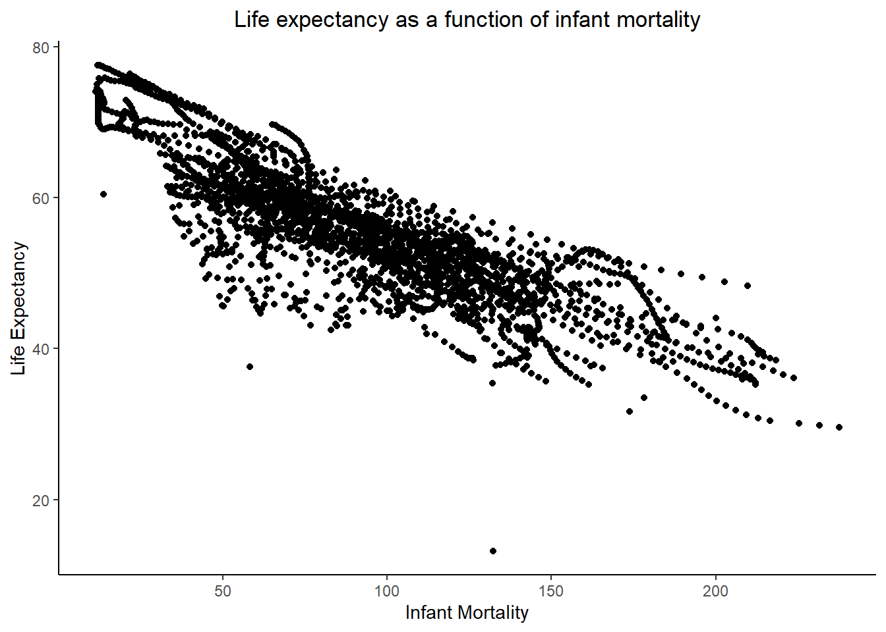
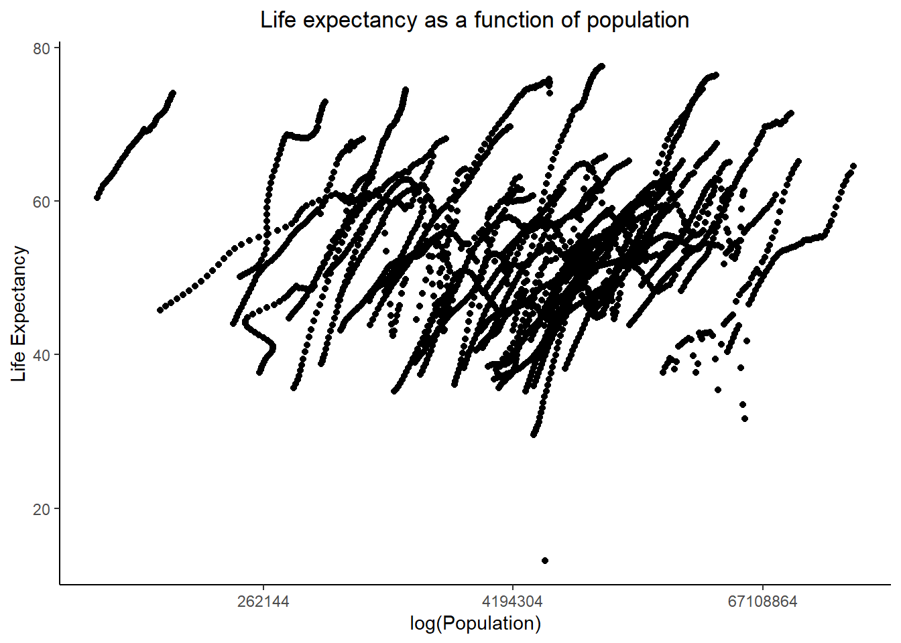
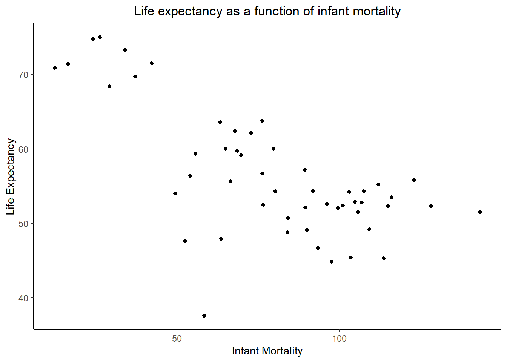
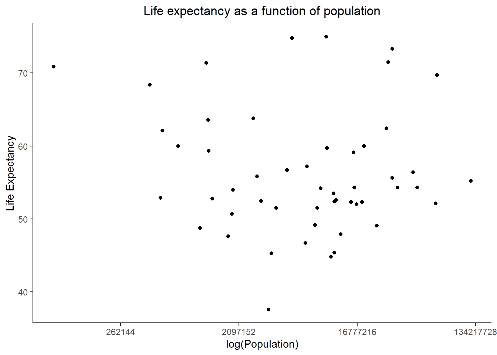
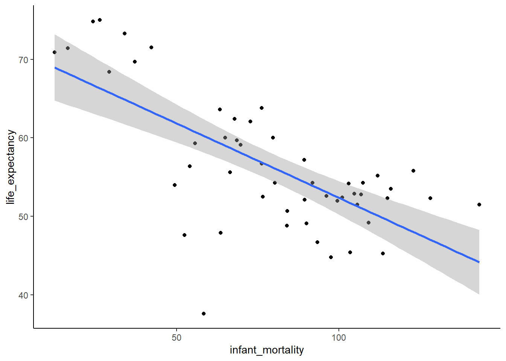
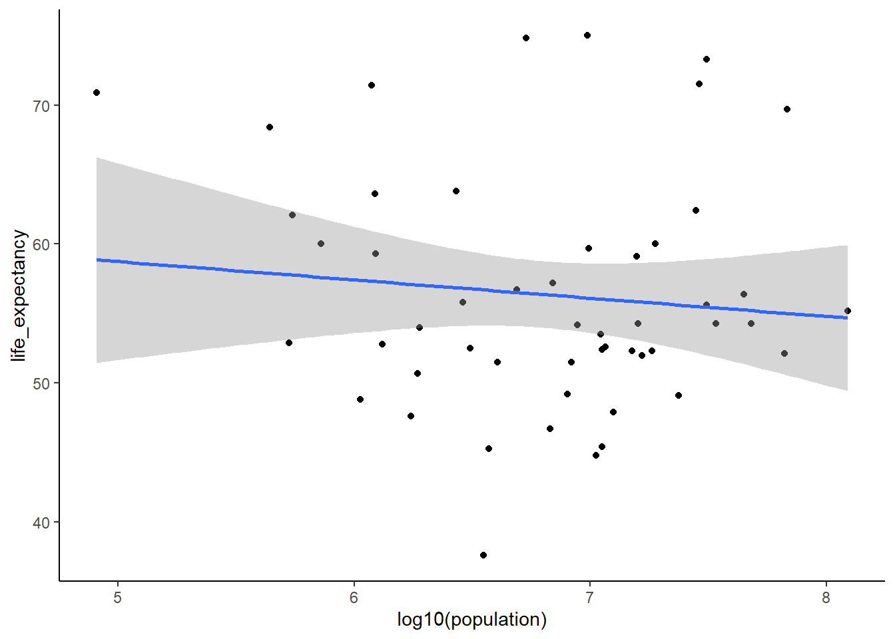

The following exercise is for Module 3 in Dr. Andreas Handel’s MADA Course.
The main portion of this exercises utilizes the Gapminder dataset to examine the relationship between infant mortality and life expectancy as well as population size and life expectancy in African countries. It conducts some data processing, creates a few plots, and adds a simple linear models of the data. The appendix, added by fellow group member Joe Martin, adds regression lines to the figures and creates dataframes for the simple linear models.
The following R packages are required for this exercise:
#look at help file for gapminder data
utils::help(gapminder)## starting httpd help server ... done#overview of data structure
utils::str(gapminder)## 'data.frame': 10545 obs. of 9 variables:
## $ country : Factor w/ 185 levels "Albania","Algeria",..: 1 2 3 4 5 6 7 8 9 10 ...
## $ year : int 1960 1960 1960 1960 1960 1960 1960 1960 1960 1960 ...
## $ infant_mortality: num 115.4 148.2 208 NA 59.9 ...
## $ life_expectancy : num 62.9 47.5 36 63 65.4 ...
## $ fertility : num 6.19 7.65 7.32 4.43 3.11 4.55 4.82 3.45 2.7 5.57 ...
## $ population : num 1636054 11124892 5270844 54681 20619075 ...
## $ gdp : num NA 13828152297 NA NA 108322326649 ...
## $ continent : Factor w/ 5 levels "Africa","Americas",..: 4 1 1 2 2 3 2 5 4 3 ...
## $ region : Factor w/ 22 levels "Australia and New Zealand",..: 19 11 10 2 15 21 2 1 22 21 ...#summary of data
summary(gapminder)## country year infant_mortality life_expectancy
## Albania : 57 Min. :1960 Min. : 1.50 Min. :13.20
## Algeria : 57 1st Qu.:1974 1st Qu.: 16.00 1st Qu.:57.50
## Angola : 57 Median :1988 Median : 41.50 Median :67.54
## Antigua and Barbuda: 57 Mean :1988 Mean : 55.31 Mean :64.81
## Argentina : 57 3rd Qu.:2002 3rd Qu.: 85.10 3rd Qu.:73.00
## Armenia : 57 Max. :2016 Max. :276.90 Max. :83.90
## (Other) :10203 NA's :1453
## fertility population gdp continent
## Min. :0.840 Min. : 31238 Min. : 40395128 Africa :2907
## 1st Qu.:2.200 1st Qu.: 1333486 1st Qu.: 1845780110 Americas:2052
## Median :3.750 Median : 5009043 Median : 7794215003 Asia :2679
## Mean :4.084 Mean : 27014609 Mean : 147954410013 Europe :2223
## 3rd Qu.:6.000 3rd Qu.: 15231789 3rd Qu.: 55399648248 Oceania : 684
## Max. :9.220 Max. :1376048943 Max. :11744219459700
## NA's :187 NA's :185 NA's :2972
## region
## Western Asia :1026
## Eastern Africa : 912
## Western Africa : 912
## Caribbean : 741
## South America : 684
## Southern Europe: 684
## (Other) :5586#determine object type of gapminder data
class(gapminder)## [1] "data.frame"First we will subset the Gapminder data to include only African countries. Then we will make two new subsets: one with only infant mortality and life expectancy data and another with only population and life expectancy data.
# Goal: create new object that selects only African countries
africadata <- gapminder[gapminder$continent == "Africa", ]
#overview of Africa data structure
utils::str(africadata)## 'data.frame': 2907 obs. of 9 variables:
## $ country : Factor w/ 185 levels "Albania","Algeria",..: 2 3 18 22 26 27 29 31 32 33 ...
## $ year : int 1960 1960 1960 1960 1960 1960 1960 1960 1960 1960 ...
## $ infant_mortality: num 148 208 187 116 161 ...
## $ life_expectancy : num 47.5 36 38.3 50.3 35.2 ...
## $ fertility : num 7.65 7.32 6.28 6.62 6.29 6.95 5.65 6.89 5.84 6.25 ...
## $ population : num 11124892 5270844 2431620 524029 4829291 ...
## $ gdp : num 13828152297 NA 621797131 124460933 596612183 ...
## $ continent : Factor w/ 5 levels "Africa","Americas",..: 1 1 1 1 1 1 1 1 1 1 ...
## $ region : Factor w/ 22 levels "Australia and New Zealand",..: 11 10 20 17 20 5 10 20 10 10 ...#summary of Africa data
summary(africadata)## country year infant_mortality life_expectancy
## Algeria : 57 Min. :1960 Min. : 11.40 Min. :13.20
## Angola : 57 1st Qu.:1974 1st Qu.: 62.20 1st Qu.:48.23
## Benin : 57 Median :1988 Median : 93.40 Median :53.98
## Botswana : 57 Mean :1988 Mean : 95.12 Mean :54.38
## Burkina Faso: 57 3rd Qu.:2002 3rd Qu.:124.70 3rd Qu.:60.10
## Burundi : 57 Max. :2016 Max. :237.40 Max. :77.60
## (Other) :2565 NA's :226
## fertility population gdp continent
## Min. :1.500 Min. : 41538 Min. : 46589993 Africa :2907
## 1st Qu.:5.160 1st Qu.: 1605232 1st Qu.: 837349135 Americas: 0
## Median :6.160 Median : 5570982 Median : 2447627163 Asia : 0
## Mean :5.851 Mean : 12235961 Mean : 9346377578 Europe : 0
## 3rd Qu.:6.860 3rd Qu.: 13888152 3rd Qu.: 6552473745 Oceania : 0
## Max. :8.450 Max. :182201962 Max. :193499101150
## NA's :51 NA's :51 NA's :637
## region
## Eastern Africa :912
## Western Africa :912
## Middle Africa :456
## Northern Africa :342
## Southern Africa :285
## Australia and New Zealand: 0
## (Other) : 0### new subset of Africa data that only includes infant mortality and life expectancy
africa_im_le <- africadata %>%
select(infant_mortality, life_expectancy)
#overview of infant mortality and life expectancy data
utils::str(africa_im_le)## 'data.frame': 2907 obs. of 2 variables:
## $ infant_mortality: num 148 208 187 116 161 ...
## $ life_expectancy : num 47.5 36 38.3 50.3 35.2 ...#summary of infant mortality and life expectancy data
summary(africa_im_le)## infant_mortality life_expectancy
## Min. : 11.40 Min. :13.20
## 1st Qu.: 62.20 1st Qu.:48.23
## Median : 93.40 Median :53.98
## Mean : 95.12 Mean :54.38
## 3rd Qu.:124.70 3rd Qu.:60.10
## Max. :237.40 Max. :77.60
## NA's :226### new subset of Africa data that only includes population and life expectancy
africa_pop_le <- africadata %>%
dplyr::select(population, life_expectancy)
#overview of population and life expectancy data
utils::str(africa_pop_le)## 'data.frame': 2907 obs. of 2 variables:
## $ population : num 11124892 5270844 2431620 524029 4829291 ...
## $ life_expectancy: num 47.5 36 38.3 50.3 35.2 ...#summary of population and life expectancy data
summary(africa_pop_le)## population life_expectancy
## Min. : 41538 Min. :13.20
## 1st Qu.: 1605232 1st Qu.:48.23
## Median : 5570982 Median :53.98
## Mean : 12235961 Mean :54.38
## 3rd Qu.: 13888152 3rd Qu.:60.10
## Max. :182201962 Max. :77.60
## NA's :51Create plots for each of the new subsets. We’re not too concerned with aesthetics just yet - we just want to visualize the relationships.
#plot life expectancy as a function of infant mortality
ggplot2::ggplot(data = africa_im_le, aes(x = infant_mortality, y = life_expectancy)) +
geom_point() +
scale_size_manual(values = 2) +
ggtitle("Life expectancy as a function of infant mortality") +
labs(x = "Infant Mortality", y = "Life Expectancy")## Warning: Removed 226 rows containing missing values (geom_point).
#plot life expectancy as a function of population size
ggplot2::ggplot(data = africa_pop_le, aes(x = population, y = life_expectancy)) +
geom_point() +
scale_size_manual(values = 2) +
scale_x_continuous(trans = 'log2') +
ggtitle("Life expectancy as a function of population") +
labs(x = "log(Population)", y = "Life Expectancy")## Warning: Removed 51 rows containing missing values (geom_point).
The Gapminder data includes data for different years for individual countries. First, we will identify years with missing data, and then create a subset for a year with complete data (2000).
### Identify missing infant mortality data
#make a list of missing infant mortality data
africadata_missing <- africadata[is.na(africadata$infant_mortality), ]
#identify years of missing infant mortality data
unique(africadata_missing$year)## [1] 1960 1961 1962 1963 1964 1965 1966 1967 1968 1969 1970 1971 1972 1973 1974
## [16] 1975 1976 1977 1978 1979 1980 1981 2016### Create subset of Africa data only in year 2000
africadata_2000 <- africadata[africadata$year == "2000", ]
#overview of Africa data in 2000
utils::str(africadata_2000)## 'data.frame': 51 obs. of 9 variables:
## $ country : Factor w/ 185 levels "Albania","Algeria",..: 2 3 18 22 26 27 29 31 32 33 ...
## $ year : int 2000 2000 2000 2000 2000 2000 2000 2000 2000 2000 ...
## $ infant_mortality: num 33.9 128.3 89.3 52.4 96.2 ...
## $ life_expectancy : num 73.3 52.3 57.2 47.6 52.6 46.7 54.3 68.4 45.3 51.5 ...
## $ fertility : num 2.51 6.84 5.98 3.41 6.59 7.06 5.62 3.7 5.45 7.35 ...
## $ population : num 31183658 15058638 6949366 1736579 11607944 ...
## $ gdp : num 54790058957 9129180361 2254838685 5632391130 2610945549 ...
## $ continent : Factor w/ 5 levels "Africa","Americas",..: 1 1 1 1 1 1 1 1 1 1 ...
## $ region : Factor w/ 22 levels "Australia and New Zealand",..: 11 10 20 17 20 5 10 20 10 10 ...#summary of Africa data in 2000
summary(africadata_2000)## country year infant_mortality life_expectancy
## Algeria : 1 Min. :2000 Min. : 12.30 Min. :37.60
## Angola : 1 1st Qu.:2000 1st Qu.: 60.80 1st Qu.:51.75
## Benin : 1 Median :2000 Median : 80.30 Median :54.30
## Botswana : 1 Mean :2000 Mean : 78.93 Mean :56.36
## Burkina Faso: 1 3rd Qu.:2000 3rd Qu.:103.30 3rd Qu.:60.00
## Burundi : 1 Max. :2000 Max. :143.30 Max. :75.00
## (Other) :45
## fertility population gdp continent
## Min. :1.990 Min. : 81154 Min. : 201900820 Africa :51
## 1st Qu.:4.150 1st Qu.: 2304687 1st Qu.: 1273938255 Americas: 0
## Median :5.550 Median : 8799165 Median : 3237716325 Asia : 0
## Mean :5.156 Mean : 15659800 Mean : 11553631293 Europe : 0
## 3rd Qu.:5.960 3rd Qu.: 17391242 3rd Qu.: 8654357070 Oceania : 0
## Max. :7.730 Max. :122876723 Max. :132877648091
##
## region
## Eastern Africa :16
## Western Africa :16
## Middle Africa : 8
## Northern Africa : 6
## Southern Africa : 5
## Australia and New Zealand: 0
## (Other) : 0Replicate the plots above, but for the 2000 subset data. Again, not worried about aesthetics here - just focused on visualizing the relationship.
#new subset of Africa data in 2000 that only includes infant mortality and life expectancy
africa_im_le_2000 <- africadata_2000 %>%
dplyr::select(infant_mortality, life_expectancy)
#overview of infant mortality and life expectancy data in 2000
utils::str(africa_im_le_2000)## 'data.frame': 51 obs. of 2 variables:
## $ infant_mortality: num 33.9 128.3 89.3 52.4 96.2 ...
## $ life_expectancy : num 73.3 52.3 57.2 47.6 52.6 46.7 54.3 68.4 45.3 51.5 ...#summary of infant mortality and life expectancy data in 2000
summary(africa_im_le_2000)## infant_mortality life_expectancy
## Min. : 12.30 Min. :37.60
## 1st Qu.: 60.80 1st Qu.:51.75
## Median : 80.30 Median :54.30
## Mean : 78.93 Mean :56.36
## 3rd Qu.:103.30 3rd Qu.:60.00
## Max. :143.30 Max. :75.00#plot of life expectancy as a function of infant mortality in 2000
ggplot2::ggplot(data = africa_im_le_2000, aes(x = infant_mortality, y = life_expectancy)) +
geom_point() +
scale_size_manual(values = 2) +
ggtitle("Life expectancy as a function of infant mortality") +
labs(x = "Infant Mortality", y = "Life Expectancy")
### new subset of Africa data in 2000 that only includes population and life expectancy
africa_pop_le_2000 <- africadata_2000 %>%
dplyr::select(population, life_expectancy)
#overview of population and life expectancy data in 2000
utils::str(africa_pop_le_2000)## 'data.frame': 51 obs. of 2 variables:
## $ population : num 31183658 15058638 6949366 1736579 11607944 ...
## $ life_expectancy: num 73.3 52.3 57.2 47.6 52.6 46.7 54.3 68.4 45.3 51.5 ...#summary of population and life expectancy data in 2000
summary(africa_pop_le_2000)## population life_expectancy
## Min. : 81154 Min. :37.60
## 1st Qu.: 2304687 1st Qu.:51.75
## Median : 8799165 Median :54.30
## Mean : 15659800 Mean :56.36
## 3rd Qu.: 17391242 3rd Qu.:60.00
## Max. :122876723 Max. :75.00#plot of life expectancy as a function of population in 2000
ggplot2::ggplot(data = africa_pop_le_2000, aes(x = population, y = life_expectancy)) +
geom_point() +
scale_size_manual(values = 2) +
scale_x_continuous(trans = 'log2') +
ggtitle("Life expectancy as a function of population") +
labs(x = "log(Population)", y = "Life Expectancy")
We are using the lm function to fit life expectancy as the outcome, and infant mortality and population size as predictors (respectively) using the year 2000 subsetted data.
#linear model with life expectancy as outcome, infant mortality as predictor (using 2000 data)
fit1 <- stats::lm(life_expectancy ~ infant_mortality, data = africa_im_le_2000)
#summary of fit 1
summary(fit1)##
## Call:
## stats::lm(formula = life_expectancy ~ infant_mortality, data = africa_im_le_2000)
##
## Residuals:
## Min 1Q Median 3Q Max
## -22.6651 -3.7087 0.9914 4.0408 8.6817
##
## Coefficients:
## Estimate Std. Error t value Pr(>|t|)
## (Intercept) 71.29331 2.42611 29.386 < 0.0000000000000002 ***
## infant_mortality -0.18916 0.02869 -6.594 0.0000000283 ***
## ---
## Signif. codes: 0 '***' 0.001 '**' 0.01 '*' 0.05 '.' 0.1 ' ' 1
##
## Residual standard error: 6.221 on 49 degrees of freedom
## Multiple R-squared: 0.4701, Adjusted R-squared: 0.4593
## F-statistic: 43.48 on 1 and 49 DF, p-value: 0.00000002826#linear model with life expectancy as outcome, population size as predictor (using 2000 data)
fit2 <- stats::lm(life_expectancy ~ population, data = africa_pop_le_2000)
#summary of fit 2
summary(fit2)##
## Call:
## stats::lm(formula = life_expectancy ~ population, data = africa_pop_le_2000)
##
## Residuals:
## Min 1Q Median 3Q Max
## -18.429 -4.602 -2.568 3.800 18.802
##
## Coefficients:
## Estimate Std. Error t value Pr(>|t|)
## (Intercept) 55.93113747430 1.46813626636 38.097 <0.0000000000000002 ***
## population 0.00000002756 0.00000005459 0.505 0.616
## ---
## Signif. codes: 0 '***' 0.001 '**' 0.01 '*' 0.05 '.' 0.1 ' ' 1
##
## Residual standard error: 8.524 on 49 degrees of freedom
## Multiple R-squared: 0.005176, Adjusted R-squared: -0.01513
## F-statistic: 0.2549 on 1 and 49 DF, p-value: 0.6159In examining the two linear models, we do not have enough evidence to determine that population size is a significant predictor of life expectancy in African countries in the year 2000. However, there is sufficient evidence to suggest a negative correlation between infant mortality rate and life expectancy in African countries in the year 2000. For each additional infant death per 1,000, the life expectancy decreases by 0.18916 years (SE = 5.459e-08, t = 0.505, p < 0.001).
#for infant mortality and life expectancy
im_le2k <- africa_im_le_2000 %>%
ggplot2::ggplot(aes(x=infant_mortality, y=life_expectancy))+
geom_point()+
geom_smooth(method="lm")
im_le2k## `geom_smooth()` using formula 'y ~ x'
#for population and life expectancy
pop_le_lm2k <- africa_pop_le_2000 %>%
ggplot2::ggplot(aes(x=log10(population), y=life_expectancy))+
geom_point()+
geom_smooth(method="lm")
pop_le_lm2k## `geom_smooth()` using formula 'y ~ x'
#for life expectancy and infant mortality
broom::tidy(fit1)## # A tibble: 2 x 5
## term estimate std.error statistic p.value
## <chr> <dbl> <dbl> <dbl> <dbl>
## 1 (Intercept) 71.3 2.43 29.4 8.91e-33
## 2 infant_mortality -0.189 0.0287 -6.59 2.83e- 8#for population and life expectancy
broom::tidy(fit2)## # A tibble: 2 x 5
## term estimate std.error statistic p.value
## <chr> <dbl> <dbl> <dbl> <dbl>
## 1 (Intercept) 55.9 1.47 38.1 4.51e-38
## 2 population 0.0000000276 0.0000000546 0.505 6.16e- 1